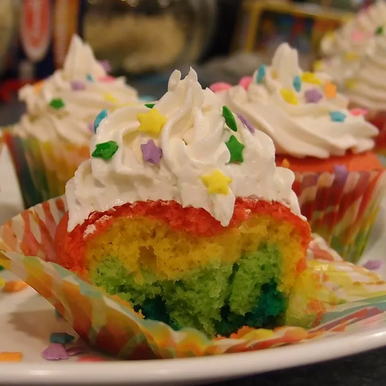

Rainbow Cupcakes

Description
This creamy cucumber salad is one of our family's all-time summer favorites.
Prep time : 20 mins
Cook time : 15 mins
Total time : 35 mins
Servings : 24
Ingredients
- 2 1/2 cups all-purpose flour
- 2 teaspoons baking powder
- 1/2 teaspoon baking soda
- 1/2 teaspoon salt
- 1/2 cup milk
- 1/2 cup vegetable oil
- 1 teaspoon vanilla extract
- 1 cup white sugar
- 1/2 cup butter
- 3 large eggs, room temperature
- red food coloring
- blue food coloring
- green food coloring
- yellow food coloring
Steps
- Preheat the oven to 350 degrees F (175 degrees C). Line two 12-cup muffin pans with paper baking cups.
- Stir together flour, baking powder, baking soda, and salt in a large bowl. Whisk together milk, vegetable oil, and vanilla in a separate bowl until evenly blended; set aside.
- Beat sugar and butter with an electric mixer in a large bowl until light and fluffy. The mixture should be noticeably lighter in color. Add eggs one at a time, allowing each egg to blend into the butter mixture before adding the next. Pour in the flour mixture alternately with the milk mixture, mixing until just incorporated.
- Divide cake batter into four separate bowls. Add a few drops of food coloring into one bowl of batter and stir; add more food coloring if necessary to reach the desired shade. Repeat with remaining colors and bowls of batter.
- Using a different spoon for each color batter, spoon a small portion of each color into the cupcake liners, until 1/2 to 3/4 full. Do not mix the batter once it is in the cupcake liner.
- Bake in the preheated oven until a toothpick inserted into a cupcake comes clean, 15 to 20 minutes.